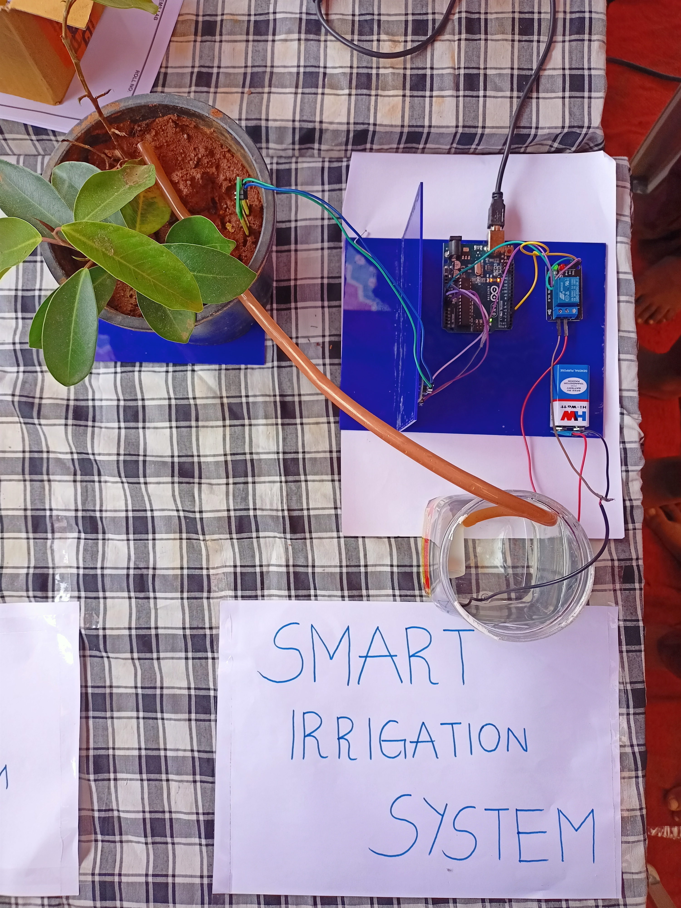

Enthusiastic and driven third-year BTech in Information Technology student at BV Raju Institute of Technology, passionate about innovation and entrepreneurship. Skilled in communication, content creation, and project management, with proven ability to thrive in dynamic environments, collaborate with diverse teams, and adapt quickly to new challenges. Eager to leverage my learnings to contribute to impactful programs and gain valuable experience in the startup ecosystem. Excited about opportunities to engage with innovative projects and drive success in the tech industry.
Description: Smart irrigation using IoT is a system that monitors soil moisture, temperature, and humidity data using sensors.
Process:
Outcome: Presented the IOT product at IOT exhibition held in the Government School,Narsapur.
Actively participated in coding competitions and hackathons. Organized workshops on web development.
E-Mail: praneethk102@gmail.com
Website: https://praneethk102.github.io